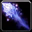
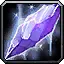
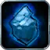
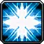
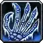

Mage – Frost Fingers of Frost
Mage – Frost Fingers of Frost
Raid Split 18 / 0 / 33 (Arcane / Fire / Frost)
Frost to Ice Barrier with Fingers of Frost, Shatter and 5 Winter's Chill feeding Ice Lance and Cone of Cold, plus Arcane Concentration and Arcane Meditation.
Talents in this build
Hover or tap a talent to see what it does at that rank.
Arcane · 18
- Improved Channeling 5/5
 Arcane Concentration 5/5
Arcane Concentration 5/5 Missile Barrage 2/2
Missile Barrage 2/2 Arcane Impact 3/3
Arcane Impact 3/3- Arcane Meditation 3/3
Frost · 33

Improved Frostbolt 5/5- Precision 3/3

Ice Shards 5/5- Frost Channeling 3/3
 Ice Lance 1/1
Ice Lance 1/1
Ice Block 1/1
Shatter 3/3- Improved Cone of Cold 3/3
 Cold Snap 1/1
Cold Snap 1/1
Fingers of Frost 2/2 Winter's Chill 5/5
Winter's Chill 5/5 Ice Barrier 1/1
Ice Barrier 1/1
Leveling order
level 10 → 60
One talent point per level from 10 to 60. Press play to watch the build fill in, or switch to Text for the list.
| Level | Talent | Tree |
|---|---|---|
| 10 | Improved Frostbolt 1/5 | Frost |
| 11 | Improved Frostbolt 2/5 | Frost |
| 12 | Improved Frostbolt 3/5 | Frost |
| 13 | Improved Frostbolt 4/5 | Frost |
| 14 | Improved Frostbolt 5/5 | Frost |
| 15 | Precision 1/3 | Frost |
| 16 | Precision 2/3 | Frost |
| 17 | Precision 3/3 | Frost |
| 18 | Ice Shards 1/5 | Frost |
| 19 | Ice Shards 2/5 | Frost |
| 20 | Ice Shards 3/5 | Frost |
| 21 | Ice Shards 4/5 | Frost |
| 22 | Ice Shards 5/5 | Frost |
| 23 | Frost | |
| 24 | Frost Channeling 1/3 | Frost |
| 25 | Frost Channeling 2/3 | Frost |
| 26 | Frost Channeling 3/3 | Frost |
| 27 | Shatter 1/3 | Frost |
| 28 | Shatter 2/3 | Frost |
| 29 | Shatter 3/3 | Frost |
| 30 | Ice Block 1/1 | Frost |
| 31 | Fingers of Frost 1/2 | Frost |
| 32 | Fingers of Frost 2/2 | Frost |
| 33 | Frost | |
| 34 | Improved Cone of Cold 1/3 | Frost |
| 35 | Improved Cone of Cold 2/3 | Frost |
| 36 | Improved Cone of Cold 3/3 | Frost |
| 37 | Frost | |
| 38 | Frost | |
| 39 | Frost | |
| 40 | Frost | |
| 41 | Frost | |
| 42 | Improved Channeling 1/5 | Arcane |
| 43 | Improved Channeling 2/5 | Arcane |
| 44 | Improved Channeling 3/5 | Arcane |
| 45 | Improved Channeling 4/5 | Arcane |
| 46 | Improved Channeling 5/5 | Arcane |
| 47 | Arcane | |
| 48 | Arcane | |
| 49 | Arcane | |
| 50 | Arcane | |
| 51 | Arcane | |
| 52 | Arcane | |
| 53 | Arcane | |
| 54 | Arcane | |
| 55 | Frost | |
| 56 | Arcane | |
| 57 | Arcane | |
| 58 | Arcane Meditation 1/3 | Arcane |
| 59 | Arcane Meditation 2/3 | Arcane |
| 60 | Arcane Meditation 3/3 | Arcane |
Other Mage builds
Off-meta